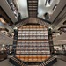
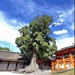
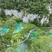
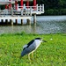
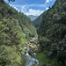

<貓頭鷹>
簡志銘│業務處 \ 客戶服務部
炯炯有神貓頭鷹展現自然野趣與迷人魅力。
<記憶的透光率>
葉譯琳│亞太研發一處 \ 亞太軟體應用研發一部
玻璃隔絕了流轉的時光，卻凝固了最炙熱的筆觸。粗獷的手寫字跡寫著對過往的珍藏，也預約著未來的期盼。空靈的空間裡，字句成了情感的延伸，當日光穿透玻璃，那些與你有關的碎片便在空氣中悄然發亮。原來最美的記憶，從不需要繁複的修飾，只需真摯地落款。
<在風裡，看見不同的故鄉>
呂宗翰│TPE庶務採購處 \ 庶務採購二部
旗海隨風飄揚，不同文化在忠貞交會，也把故鄉的記憶留在這片天空下。

<蔦屋書店>
曾柏翔│車電人工智慧處 \ 車電人工智慧處
位於名古屋蔦屋書店的巨大挑高書牆，橫跨一至二樓，搭配鏡面反射，讓整面書牆與樓梯延伸，營造出魔幻般的視覺感受。
<全台最美星巴克>
連柏柔│硬體工程一處 \ 硬體工程一處
依山傍水的星巴克理想門市，其歐洲童話小屋般的外型及優美環境，吸引了許多遊客到訪拍照。
<理想PAARK & 最浮誇7-ELEVEN>
連柏柔│硬體工程一處 \ 硬體工程一處
7-ELEVEN花蓮理想門市，坐落於壽豐鄉「理想PAARK水岸生活園區」內。有別於一般超商外觀，這座建築以夕陽橘為主色調，周圍種植了許多高大仙人掌，屋頂與窗框更融入了精緻的鐘樓與羅馬時鐘造型，誰敢說它不是全台最浮誇的小7呢？
<天峰>
林彥廷│機構技術處 \ 關鍵組件部
天與峰的交界，是世界上最寬廣的風景。
<紐西蘭-瓦納卡之樹>
劉秋玲│機構技術處 \ 安規環保認證部
這棵位於紐西蘭瓦納卡湖畔水中樹在 1939 年種下，原本是用來當作柵欄的木樁，後來奇蹟般地在水中生根，變成如今佇立在湖水中的獨特景觀，有種與世隔絕的孤獨感，又稱為「孤獨樹」，是當地最著名的地標與打卡景點。
<壯闊的的塔斯曼冰川>
劉秋玲│機構技術處 \ 安規環保認證部
塔斯曼冰川，位於紐西蘭南島的庫克山國家公園內，是境內最大、最長的冰川，每年吸引許多愛好冒險的觀光客前往一遊。最能親近冰川的方式是搭乘直升機降落在冰川上，在專業嚮導帶領下穿戴冰爪探索冰雪世界與神祕冰洞。
<世界冒險之都-皇后鎮>
劉秋玲│機構技術處 \ 安規環保認證部
紐西蘭皇后鎮被譽為「世界冒險之都」，是極限運動與絕美風景的代表城市。 搭乘纜車抵達最高點，可俯瞰皇后鎮全景。
<布魯塞爾Galeries Royales
Saint Hubert聖休伯特拱廊街>
陳俊翰│機構技術處 \ 安規環保認證部
聖休伯特拱廊街的設計靈感源自19世紀義大利皇宮，整體風格優雅精緻，又帶著一絲華麗氣息。金屬框架搭配通透的玻璃屋頂，不僅造型典雅，也能遮風避雨，讓人無論晴雨、四季，都能悠閒自在地漫步其中，因此也有「布魯塞爾的雨傘」之美稱。
<根特>
陳俊翰│機構技術處 \ 安規環保認證部
站在聖米歇爾橋上向遠方望去，聖尼可拉斯老教堂靜靜佇立於街景之中，古老的建築外觀與周圍城市景致相互映襯。從橋上取景，不僅能捕捉教堂的歷史風貌，也將布魯塞爾的街道、建築與生活氣息一併收入鏡頭，呈現出一幅充滿歐洲古城韻味的畫面。

<大樹>
邱詩儒│亞太研發一處 \ 亞太軟體應用研發一部
京都春日大社，古老大樹聳立於神社之間，映著湛藍天空與潔白雲朵，陽光灑落，感受日本古都的寧靜與美好。
<竹林>
邱詩儒│亞太研發一處 \ 亞太軟體應用研發一部
日本京都嵐山竹林小徑，乘坐傳統人力車穿梭翠綠竹林，抬頭仰望滿天竹影與陽光，感受寧靜又浪漫的日式風情。
<巨人降臨>
洪秉誠│軟件設計處 \ BIOS軟體設計二部
在夜幕低垂的巷弄盡頭，超大型巨人正靜靜地俯瞰著這座城市。
<千年之上的燈火>
謝仰登│硬體研發處 \ 硬體四部
登上利卡維多斯山，暮色漸沉，衛城的燈光一盞盞亮起，守護著腳下的萬家燈火。兩千多年的時光與現代城市在此交會，讓人明白，有些光芒從不曾熄滅，只是靜靜等著被看見。
<愛琴海的溫柔告白>
謝仰登│硬體研發處 \ 硬體四部
伊亞的夕陽緩緩沉入愛琴海，白色屋舍被染成金橘，風車與藍頂教堂靜靜守著天邊的餘暉。旅途中的疲憊，都在這一刻被晚風輕輕帶走，只剩下滿心的平靜與感動。

<藍綠色的呼吸>
謝仰登│硬體研發處 \ 硬體四部
俯瞰十六湖，木棧道在翠綠與湛藍之間蜿蜒，湖水層層疊疊，像大自然調出的調色盤。瀑布聲與林間的風交織，讓匆忙的腳步慢了下來，也讓心靜得像湖面一樣清澈。

<偶遇優雅的夜鷺>
楊子慧│機構技術處 \ 機構技術部
來到台北大湖公園，湖光山色與綠意盎然的景色，讓人感受到悠閒自在的氛圍。湖畔涼亭倒映在水面上，微風吹拂，湖水泛起陣陣波光。草地上意外遇見一隻夜鷺悠閒地漫步覓食，彷彿是公園裡的小主人。美麗的風景加上不期而遇的小驚喜，為這趟散步增添了幾分樂趣。
<千年信仰・一瞬光芒>
張育群│機構技術處 \ 機構技術部
古老的金塔靜靜佇立，陽光輕灑其上。歷史與光影在此交會，訴說著歲月不曾褪色的故事。
<光的盡頭，是心的方向>
張育群│機構技術處 \ 機構技術部
幽暗的長廊，燈火一路相伴。循著遠方的光前行，彷彿人生的旅途，再漫長，也總有希望在前方。

<杉林溪裡的山林>
黃名榕│數據中心系統開發業務本部 \ 主件策略採購部
又是美得像一幅畫作的風景，南投杉林溪很值得大家去走走呼吸新鮮空氣享受大自然。